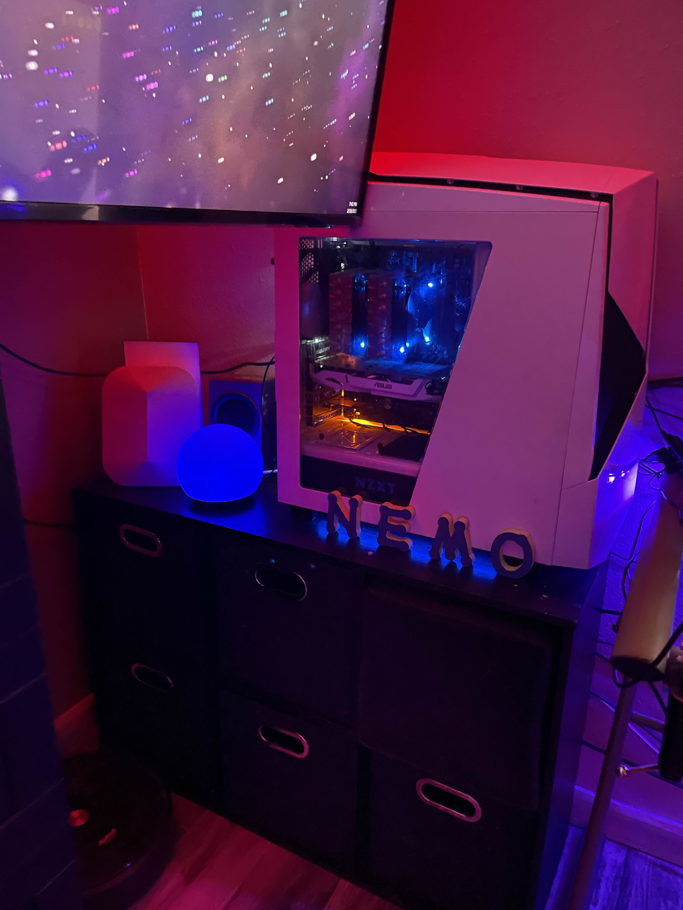
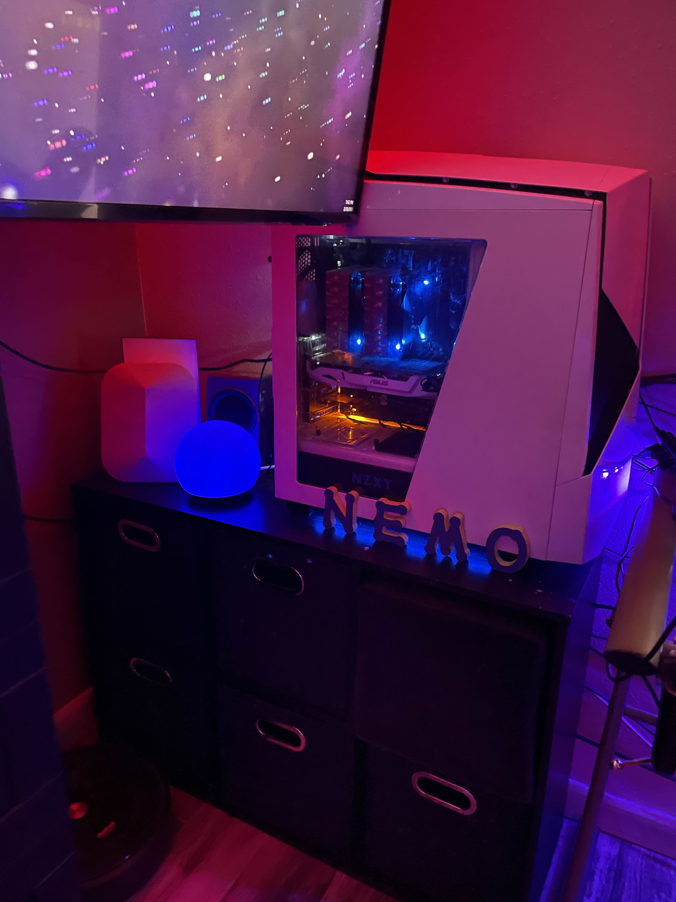

Email: owenbentz01@gmail.com
Phone: 612-701-4335
DoB: 01-24-2003
Objective
Highly motivated aspiring cybersecurity student seeking to leverage my skills and passion in a real-world, relevant job setting.
Email: owenbentz01@gmail.com
Phone: 612-701-4335
DoB: 01-24-2003
Highly motivated aspiring cybersecurity student seeking to leverage my skills and passion in a real-world, relevant job setting.
Casper, WY (2017-2019)
Cook, Kitchen Staff
Commitment to customer service and food industry
Casper, WY (2020-2025)
Package Delivery Personnel
Demonstrated reliability and time management skills.
{Currently working towards CCNA}
My attraction to this field stems not only from my experience as the go-to IT support for family and friends, but also from just enjoying troubleshooting. Getting side tracked with something technical, refusing to let it beat me, and then digging in to try to solve it. I genuinely enjoy helping others resolve their technical issues and find the troubleshooting process to be rewarding.
I'm a highly motivated aspiring cybersecurity enthusiast with a lifelong passion for technology. From building my first gaming rig at 14, to mastering network configurations, my passion for the digital world is unwavering.
While the majority of my knowledge is self-taught, driven by curiosity and desire to learn, my family has been a constant source of encouragement, wholeheartedly supporting my interests. I also owe significant credit to both my Kelly Walsh CISCO teacher, Duane Reimer, and my Casper College CCNA instructor, Jeffrey Brewster, for their invaluable contributions. I am currently preparing to take the CCNA exam upon completion of my CCNA prep course at Casper College.
In my opinion, AI is a powerful tool with vast potential for automating tasks and enhancing various processes. I believe it is crucial to learn how to effectively utilize these tools while maintaining an awareness of their distinction from human-generated content. (In fact, this website was built using contributions from Gemini 2.0). Effective cybersecurity execution starts by making sure your friends and family are protected. Unlike other fields, AI is accelerating cybersecurity. With the advancements of technology, EVERYONE should have at least a basic understanding of cybersecurity.
 



References available upon request.